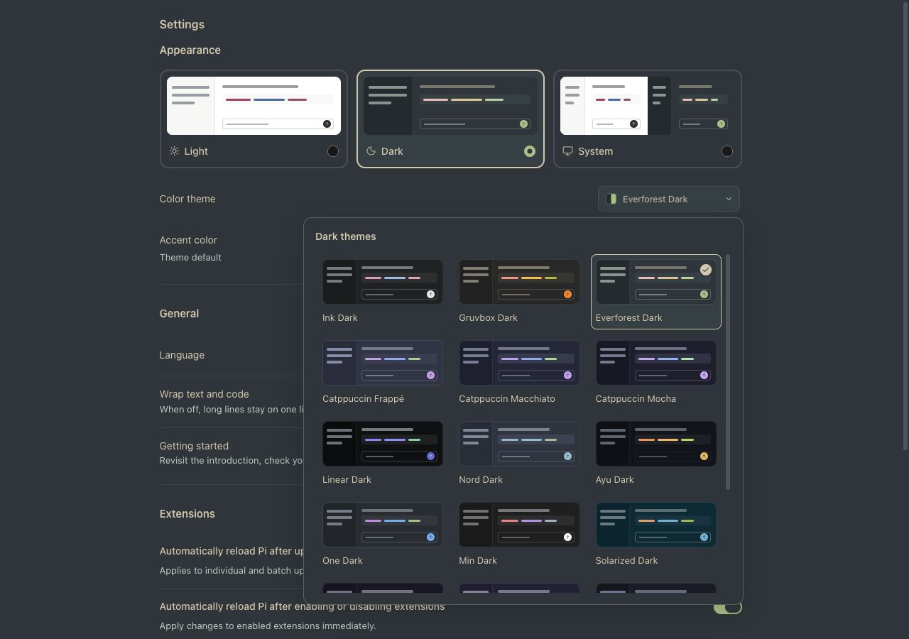
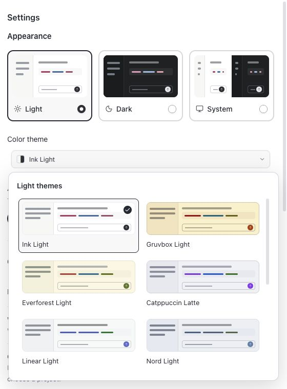
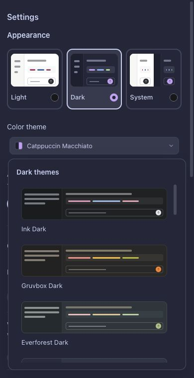
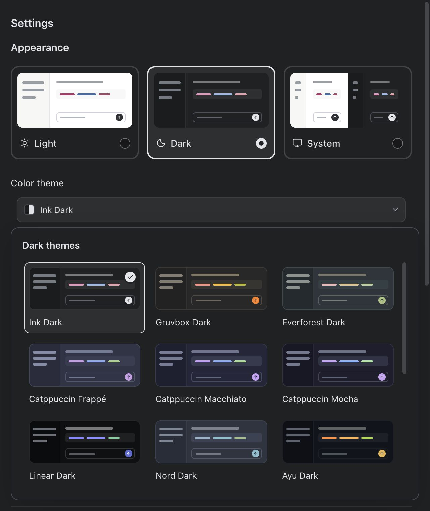

<!doctype html><html lang="zh-CN"><meta charset="utf-8"><title>主题卡片排版优化</title><style>body{margin:0;padding:28px;font:15px/1.6 system-ui;background:#202122;color:#e2e4e8}main{max-width:1280px;margin:auto}section{margin:28px 0}img{display:block;max-width:100%;height:auto;border-radius:12px}.grid{display:grid;grid-template-columns:repeat(auto-fit,minmax(300px,1fr));gap:24px}h1{font-size:24px}h2{font-size:17px}a{color:inherit}</style><main><h1>主题卡片排版优化</h1><p>保留预览卡片；完整名称单行显示，勾选移至预览角落，网格按空间调整列数。</p><section><h2>暗色 · 三列</h2><a href="after-dark.jpg"></a></section><div class="grid"><section><h2>亮色 · 两列</h2><a href="narrow-light.png"></a></section><section><h2>暗色 · 单列</h2><a href="compact-dark.png"></a></section></div><section><h2>两倍显示检查</h2><a href="zoom-200.jpg"></a></section></main></html>
